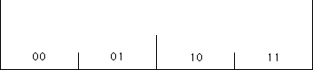
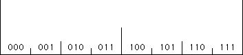
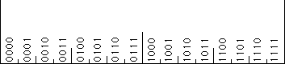

| Consider an inch. We shall successively subdivide it into halves, and the halves into
halves, and so on. Seeking the scaled patterns within patterns is a natural approach for people accustomed to
thinking about fractals. | |
| First, divide the inch into halves, left and right. To each point in this inch we assign an
address, 0 to the points on the left half, 1 to the points on the right half. Because an address of 0 means
the point is less than 1/2 and an address of 1 means the point is greater than 1/2,
we can think of this address as giving the number of 1/2s in the point. |
|
| Next divide each half into halves of halves, that is, into quarters. The second address digit, 0 or 1,
indicates whether the point is in the left or right side of the half to which it belongs. From left to right, the addresses
of the quarters are 00, 01, 10, and 11. |
 |
| Now divide the quarters into eighths. The addresses are 000, 001, 010, 011, 100, 101, 110, 111. |
 |
| Divide the eighths into sixteenths. The addresses are 0000, 0001, 0010, 0011, 0100, 0101, 0110, 0111,
1000, 1001, 1010, 1011, 1100, 1101, 1111. |
 |
| Note the order of the address digits. The first (left) digit tells us to which half of the
inch the point belongs, the next digit to which half of that half, and so on. How can we compare this with the
usual order we write addresses on mail. |
| To strengthen the tie to fractals, we show addresses can be interpreted in terms of
functions, and the order of the address digits is identical to the order
of the composition of these functions. |